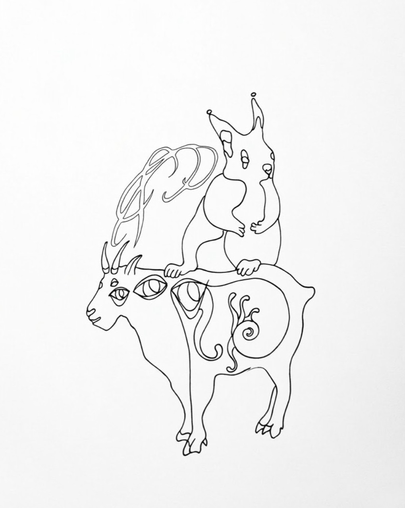
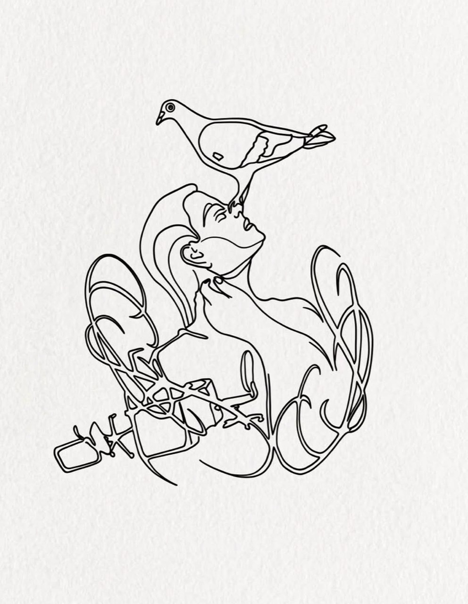

hi, little animal. you're here :)
RAT
PARK
A place for bodies, creatures, daydreams & tattoos.
Come in. Take a breath.
You can be a bit weird here.

have teeth made to feel
things
original drawings / living skin / many little worlds

hello, body.why Rat Park?
Maybe we all need a better place to play.
Rat Park is a little reminder that we’re animals. We need company, space, softness, a bit of mischief. We need to feel the ground under our feet and remember that our bodies are ours.
The name comes from an experiment about rats and their environment. For me, it became a question: what helps us feel alive?
I draw curious creatures, tender monsters and people who don’t have to fit neatly into a box. Sometimes a tattoo is just a beautiful little thing. Sometimes it’s a way back to yourself. Both are good.
let's make something togetherlittle worlds, waiting for skin
Some flash
& other creatures
Have a look around. Some drawings might become your next tattoo; all of them are here to make you feel something.
Please don’t copy the drawings. If one speaks to you, let’s talk about putting it on you instead :)
a tiny pause
What does your animal need today?
Tap the button. No wrong answers.
Maybe a stretch, for a start.
your rules
get tattooed
Got an idea? Tell me.
Maybe it’s one of these flashes. Maybe it’s a creature that only exists in your head so far. Big feelings and silly ideas are both welcome.
Send me the design you like, where you imagine it on your body, roughly how big, and anything you’d like me to know. We can figure out the rest together.